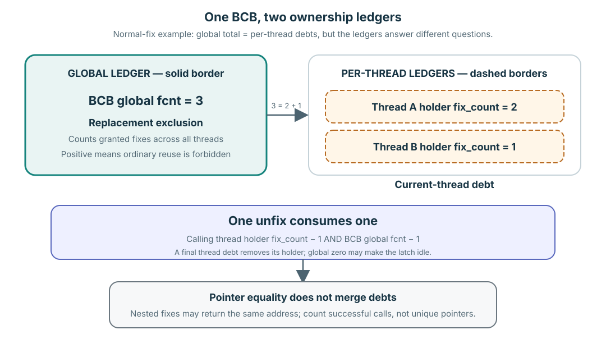

메모리의 한 페이지를 여러 사용자가 함께 쓰려면
A와 B는 실행 문맥이며, 이 타임라인에서는 각각 스레드입니다. H1과 H2는 페이지 식별자입니다. H1의 바이트는 프레임에 있고, BCB는 그 페이지의 식별자와 사용 상태를 기록합니다. 여기서 H1을 확대해 보는 동안 H2는 바뀌지 않습니다. 소스의 동작을 설명하기 위해 구성한 순서이며 실행 측정 결과가 아닙니다.
fix가 성공하면 메모리에 있는 페이지를 임시로 사용할 권한과 짝이 되는 unfix 한 번의 의무가 생깁니다. 사용이 남아 있으면 일반적인 교체 경로에서 프레임을 다른 페이지로 재사용할 수 없습니다. latch는 페이지 바이트에 대한 접근을 조절합니다. READ는 읽기를, WRITE는 배타적인 수정을 허용합니다. 읽는 두 사용자는 함께 접근할 수 있지만, 읽는 사용자와 별도의 쓰는 사용자가 동시에 같은 바이트를 사용해서는 안 됩니다. 이 권한만으로 트랜잭션 전체의 정합성이 보장되지는 않습니다. 앞선 트랜잭션 잠금 강의를 들었다고 가정하지 않습니다.
dirty는 메모리의 페이지에 재사용 전에 보존해야 할 변경이 있다는 뜻입니다. 사용을 끝냈다고 페이지가 저절로 clean이 되지는 않습니다. 이번에는 사용 수명, 접근 권한, 교체 가능 조건을 구분합니다. WAL, 복구, LSA, DWB와 복사한 세대의 세부 프로토콜은 다음 세션에서 다룹니다.
1. A가 읽는 동안 B도 읽을 수 있을까?
시작 조건: H1은 clean이며 메모리에 있습니다. 대기자와 다른 사용자가 없고, 이 순서에는 백그라운드 상태 전이가 없습니다. A만 READ fix를 한 번 승인받았습니다. 전역 fcnt = 1, A의 holder fix_count = 1이고 B의 holder는 없습니다. A와 B는 읽기만 합니다.
- A가 READ 권한으로 H1을 계속 읽습니다.
- B가 H1의 READ fix를 요청합니다.
B의 접근 권한, 각 holder의 개수, H1 프레임의 재사용 가능 여부를 예측해 보세요.
다음 상태 펼치기
B의 READ 요청은 호환되므로 성공합니다. 전역 fcnt = 2이며 A와 B는 각각 unfix 한 번을 해야 합니다. 둘 다 H1을 읽을 수 있지만 READ 권한으로 수정할 수는 없고, 프레임도 재사용할 수 없습니다. 호환된다고 새 reader가 기존 대기열을 무조건 건너뛸 수 있다는 뜻은 아닙니다. 대기자가 없다는 시작 조건이 중요합니다.
2. B가 수정하려면 어디서 기다릴까?
같은 시작점으로 되돌립니다: H1은 clean이며 메모리에 있고, A만 READ fix 한 번을 보유합니다. 전역 fcnt = 1, B의 holder는 없으며 처음에는 대기자도 없습니다. 두 reader가 된 결과에서 이어지는 순서가 아닙니다. B는 unconditional WRITE fix를 요청하고 A는 계속 읽습니다. timeout, interrupt, 경쟁 요청과 백그라운드 상태 전이는 없다고 가정합니다.
- A가 H1을 읽는 중에 B가 WRITE를 요청합니다.
- A가 자신에게 남은 유일한 unfix를 수행합니다.
- 대기하던 요청이 재개되어 성공적으로 승인됩니다.
B가 바이트를 수정할 수 있는 단계는 어디인가요? WRITE를 요청하기만 해도 승인된 fix 의무가 늘어날까요?
다음 상태들 펼치기
1단계에서 B는 기다립니다. A의 의무와 전역 fcnt는 1이고, B는 아직 사용을 승인받지 않았으므로 바이트에 접근할 수 없습니다. 2단계에서는 A의 holder가 제거되고 A의 기여분이 0이 됩니다. 그래도 B는 승인 전까지 포인터를 사용할 수 없습니다. 3단계에서 B가 WRITE를 보유하며 전역 fcnt = 1, B의 holder 개수도 1이 됩니다. 이제 B는 그 권한으로 수정할 수 있습니다. 새 사용이 시작된 것이며, A와 B 사이에 개수가 0이 되었다고 반드시 퇴출해야 하는 것은 아닙니다. A가 반납한 포인터에는 더 이상 접근 권한이 없습니다.
Verified mechanism: pgbuf_latch_bcb_upon_fix()는 요청의 호환성을 검사하고 충돌하는 요청을 대기로 보냅니다. 성공적인 승인이 holder의 반납 의무를 만듭니다.
성공한 acquisition만 fix debt를 만듭니다
성공한 fix 하나는 정확히 하나의 release debt를 만듭니다. matching unfix 하나가 정확히 debt 하나를 갚습니다.
예상된 resident-only miss, conditional conflict, timeout, interrupt처럼 grant 없이 반환한 request는 성공한 ownership을 만들지 않으므로 unfix debt도 없습니다. accounting boundary는 pgbuf_fix() 진입이 아니라 grant 시점입니다.
Global exclusion과 thread attribution은 다릅니다

이 닫힌 예에서는 3 = 2 + 1입니다. source는 각 답을 서로 다른 owner에 저장합니다.
| Ledger | 답하는 질문 | 혼자서는 답할 수 없는 질문 |
|---|---|---|
BCB global fcnt | 모든 thread에 걸쳐 이 BCB를 보호하는 granted fix는 몇 개인가? | 각 release를 어느 thread가 빚지고 있는가. |
Thread holder fix_count | 이 thread가 이 BCB에 빚진 nested debt는 몇 개인가? | 다른 thread 몇 개가 이 BCB를 hold하는가. |
BCB가 holder thread의 전체 목록을 소유하는 것은 아닙니다. attribution 방향은 각 thread의 holder anchor에서 그 thread가 debt를 가진 BCB 쪽으로 향합니다.
Verified mechanism: holder와 atomic-latch fcnt structure는 pinned page_buffer.c:460–488에 있고, grant update는 6277–6634를 통해 이루어집니다.
H1을 대상으로 하는 별도의 READ 전용 시연입니다. 처음에는 승인된 fix와 대기자가 없습니다. 아래 세 요청은 모두 성공하며, 다른 사용자나 백그라운드 상태 전이는 없습니다.
page 하나, 성공한 call 세 번
global fcnt = 0에서 시작합니다. simulator를 쓰기 전에 여섯 row를 모두 예측하세요.
- A가 fix에 성공합니다.
- A가 같은 page를 다시 fix해 성공합니다.
- B가 compatible READ latch 아래에서 fix에 성공합니다.
- A가 한 번 unfix합니다.
- B가 한 번 unfix합니다.
- A가 마지막으로 unfix합니다.
각 row마다 global fcnt, A holder count, B holder count, 그리고 누가 borrowed pointer를 계속 사용할 수 있는지 적으세요.
먼저 예측한 다음 ledger를 실행합니다
fcnt0| # | Event | Global | A holder | B holder |
|---|
전체 장부 결과 펼치기
주소 세 개가 같아도 debt는 세 개입니다
성공한 call 세 개가 같은 resident frame을 빌리므로 모두 같은 주소를 반환할 수 있습니다. 그렇다고 call별 의무가 합쳐지지는 않습니다. 고유한 pointer value가 아니라 성공한 grant 수를 세세요.
A가 처음 unfix한 뒤에도 nested debt 하나가 남으므로 그 ownership 아래에서 resident bytes를 계속 사용할 수 있습니다. B가 unfix하면 B holder는 제거되고, B는 borrowed pointer를 더 이상 사용할 수 없습니다. A가 마지막 unfix를 하면 이 sequence에서 어느 thread도 access를 소유하지 않습니다.
실제 ownership side effect만 release합니다
정상 unfix 하나는 호출 thread의 nested holder debt와 BCB global count를 하나씩 줄입니다. 그 thread의 count가 0이 되면 holder record를 제거합니다. global fcnt가 0이 되면 BCB는 latch-idle이 되고 replacement 검토 대상에 다시 들어갈 수 있습니다.
Unfix는 commit, flush, eviction, invalidation, deallocation이 아닙니다.
Global zero는 일반 victim 재사용의 필요조건이지만 충분조건은 아닙니다. Dirty/flushing state, waiter, replacement-zone membership, protected revalidation도 여전히 중요합니다.
Verified mechanism: holder decrement는 page_buffer.c:6128–6184, global decrement와 가능한 idle transition은 6636–6703, caller-facing unfix route는 pinned 3062–3201에 있습니다.
마지막 unfix에서 교체 정책으로
한 실행 문맥의 마지막 unfix는 그 문맥에 남은 마지막 fix 의무를 갚고 holder를 제거합니다. 다른 문맥까지 H1 사용을 끝냈다는 뜻은 아닙니다. 승인된 사용이 모두 끝나야 전역 fcnt가 0이 됩니다. 다음 정책 예에서는 A와 B가 모든 fix를 반납했고 대기자가 사용을 이어받지 않는다고 가정합니다.
H1은 여전히 메모리에 있을 수 있고, BCB와 프레임도 그대로 있습니다. clean이며 사용자가 없는 페이지는 후보가 될 수 있지만 반드시 퇴출하라는 뜻은 아닙니다. dirty 상태, 진행 중인 flush, 대기자, zone 소속, 보호된 상태에서의 현재 조건 재검사가 일반적인 재사용을 계속 제한합니다. 쓰기가 완료되어도 재검사를 생략할 수 없으며, flush는 트랜잭션 commit과도 다릅니다.
ledger를 직접 설명합니다
문제
A×2, B×1 sequence를 기억만으로 설명하세요. 모든 call이 같은 PAGE_PTR를 반환하는데도 debt가 세 개인 이유는 무엇이며, 마지막 global fcnt == 0은 무엇을 보장하고 무엇은 보장하지 않나요?
생각할 점: 잘못된 unfix 동의어 하나를 배제하고 source-evidence label 하나를 포함하세요.
설명 펼치기
successful-call count → global total → per-thread attribution → debt마다 unfix 하나 → pointer lifetime → replacement boundary.
increment 하나와 decrement 하나를 추적합니다
정상 grant는 page_buffer.c:6277–6537, 정상 release 하나는 6128–6184,6636–6703에서 읽으세요. 각 count를 어느 owner가 저장하는지, holder가 정확히 어디서 사라지는지 표시합니다.